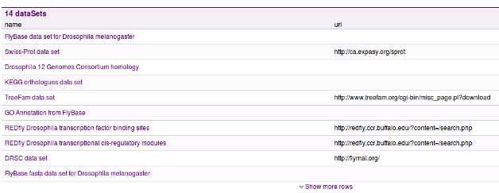
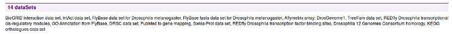

One can edit the appearance of object title(s) through the webconfig-model.xml file (See Text and messages).
Let us suppose we want to have a default way of displaying bio entities like gene, protein or probe set. Thus we would look up the entry for bio entity class and add the following configuration:
<class className="org.intermine.model.bio.BioEntity">
<headerconfig>
<titles>
<title mainTitles="symbol|primaryIdentifier" numberOfMainTitlesToShow="1" subTitles="*organism.shortName*" />
</titles>
</headerconfig>
</class>
We see that the titles are defined within the headerconfig block. Then we have the following fields:
this is where we define sub titles. Again we can use the vertical bar to define a number of key values to display. Subtitles can be displayed in three ways based on the tags around them that define element formatting:
What is important to note, is that classes of objects inherit from their parents, thus unless we provide a different configuration for a, say, Protein title, the formatting from BioEntity will be applied. Fields resolved in the title(s) will be removed from the summary below it.
One can have a custom link in the header of the page through the webconfig-model.xml file.
<headerconfig>
<customlinks>
<customlink
url="http://flybase.org/reports/{primaryIdentifier}.html"
image="flybase_logo_link.png"
/>
</customlinks>
</headerconfig>
The example above has been inserted as a child of the Gene class <class className="org.intermine.model.bio.Gene">. The parameters are as follows:
Each object has a number of fields configured in the model, like length or proteins for Gene. The first is a reference to a single value or an object, the latter is a list of values/objects. These then appear on the report page as References and Collections.
To configure in which category on the page these are to show, follow Website Admin.
Additionally, one can decide to either show the old style “inline tables” or use the new Results Tables JS library when displaying these. To enable the latter, edit your web.properties as follows:
inline.collections.in.tables = true
This will display any inline collections in table widgets. Unless use.localstorage is true they will appear expanded but can be collapsed.
use.localstorage = true
Both inline collections and templates will initially appear collapsed. Their state will be tracked using localStorage if available.
Inline lists are lists of values in one column of a report page table, displayed in one line. Take ‘’dataSets’’ on a Gene object as follows:
Perhaps we would like to only display the names of data sets available. Then, we would add the following to the Gene class (<class className="org.intermine.model.bio.Gene">) in the webconfig-model.xml file:
<inlinelist>
<table path="dataSets.name" />
</inlinelist>
The result:
Let’s go through the available configuration:
If we have not set an inline list to appear in the header section of the page, the list will, by default appear in the category “Other” on the report page. If we login to the system we can then (through the report page tagging interface that is revealed to us) tag the list to appear in a specific section.
See Report Displayers for details on how to create displayers for the report page.
Tag template with the im:report tag. See Website Admin.
See Data and Widget Configuration for details on how to change the names of class and fields.
You can also hide collections by tagging them with the im:hidden tag.